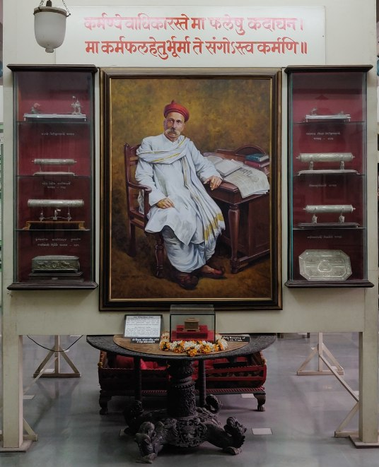

BACKLokmanya Tilak Museum

The Lokmanya Tilak Museum, located in Kesari Wada, Narayan Peth, was inaugurated in January 1 and hence it was
known as Gallowad Wada. When Tilak purchased it to begin work on Kesari, his The museum was conceived, and is
managed, jointly by The Kesari Maharatta Trust and the Tilak The Lokmanya Sabhagriha (Auditorium), and a couple
of offices managed by the Trust. On displ various events from Tilak's life, his genealogical table, personal
belongings, an early desi when he was locked up at the Mandalay Jail. Another replica has him sitting in his study
and and other artefacts such as his clothes, headgear, glasses, and so on.